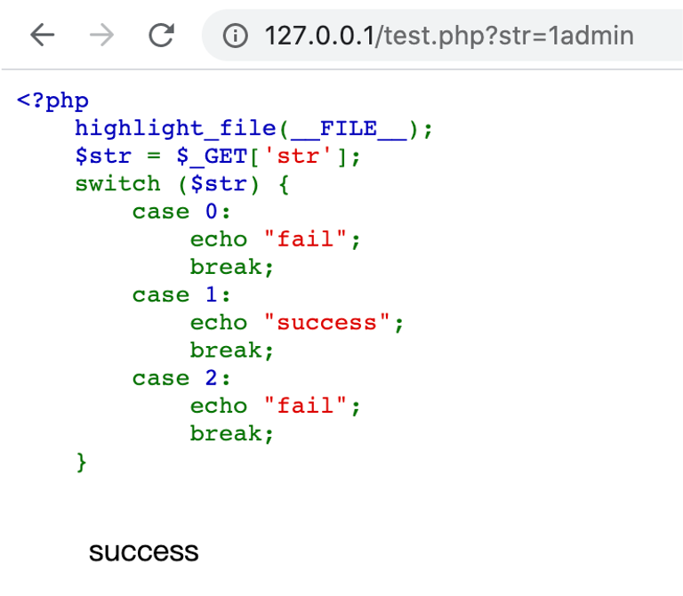

变量覆盖
extract：从数组中将变量导入到当前的符号表，检查每个键名看是否可以作为一个合法的变量名，同时也检查和符号表中已有的变量名的冲突
语法：
1 | extract ( array &$array [, int $flags = EXTR_OVERWRITE [, string $prefix = NULL ]] ) |
在没有指定flags情况下，如果有冲突，覆盖已有的变量
parse_str：将字符串解析成多个变量，如果没有array 参数，则由该函数设置的变量将覆盖已存在的同名变量。
语法：
1 | parse_str ( string $encoded_string [, array &$result ] ) |
可变变量导致的变量覆盖问题
可变变量就是由两个$$符号的变量
$GLOBALS
引用全局作用域中可用的全部变量
php弱类型
相等比较
php中有两种比较符号：== 与 ===
== 在进行比较时，会先把两个变量的类型变成相同再比较
=== 在进行比较时，会先判断两个变量的类型是否相同，再比较
为什么会出现‘admin’ == 0 ==> true 这种结果呢？
因为字符串在和数字进行比较的时候，字符串会被转换成数值再进行比较
而在PHP手册中写道，当一个字符串当作一个数值来取值时，有以下结果：
（1）如果字符串没有包含.、e、E并且其数值在整型的范围之内，该字符串被当作int取值，其他情况下都被作为float来取值
（2）该字符串的开始部分决定了它的值，如果该字符串以合法数值开始，则使用该数值，否则值为0
为什么会出现’0e123456’ == ‘0e987654’ ==> true 这种结果呢？
0e开头加数字组成的字符串在比较时，会将0e这类字符串识别为科学技术法的数字，0的无论多少次方都是零，所以相等
md5绕过
关于md5绕过的题目基本就三种：
（1）== 比较用0e绕过
一些常见的md5开头是0e的字符串
1 | 常用 |
（2）!== 利用数组绕过
md5() 中需要的是一个 string 类型的参数。但是当你传递一个 array 时，md5() 不会报错，只是会无法正确地求出 array 的 md5 值，这样就会导致任意 2 个 array 的 md5 值都会相等
（3）找出md5值真正相等的三个不同字符串，可以用文件生成，github已有工具
strcmp绕过
strcmp()：是比较两个字符串是否相等的函数
它的判断原理是先将两个字符串转换成ascii然后进行减法运算，如果str1 < str2，则返回 <0；如果 str1 > str2，返回 >0；如果两者相等则返回 0
如果传入的是个数组会怎么样呢？
因为函数接受到了不符合的类型，strcmp无法比较，因此会返回null，但null与0进行松散比较结果是true的
switch
如果 switch 是数字类型的 case 的判断时，switch 会将参数转换为 int 类型。原理和之前的一样

json
要求输入一个json类型的字符串，json_decode函数解密成一个数组，判断数组中key的值是否等于 $flag的值，但是$flag的值我们不知道，但是可以利用0==”admin”这种形式绕过
利用的其实还是字符串和数字比较的转换问题
in_array() 和 array_search()
in_array：检查数组中是否存在某个值
语法：
1 | in_array ( mixed $needle , array $haystack [, bool $strict = FALSE ] ) |
在PHP手册的解释中，如果 strict 参数没有提供，那么 in_array 就会使用松散比较来判断 $needle 是否在 $haystack 中
array_search：在数组中搜索给定的值，如果成功则返回首个相应的键名
语法：
1 | array_search ( mixed $needle , array $haystack [, bool $strict = false ] ) |
第三个参数默认为 false ，如果设置为 true 则会进行严格过滤